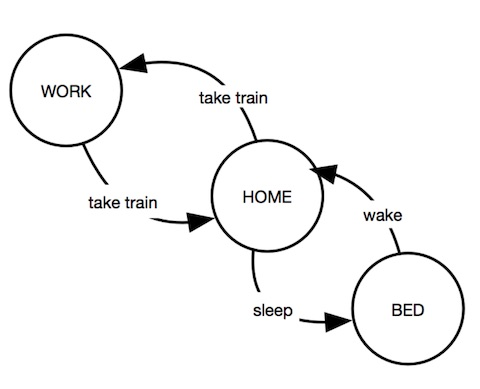
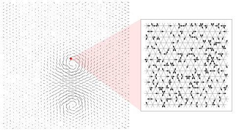
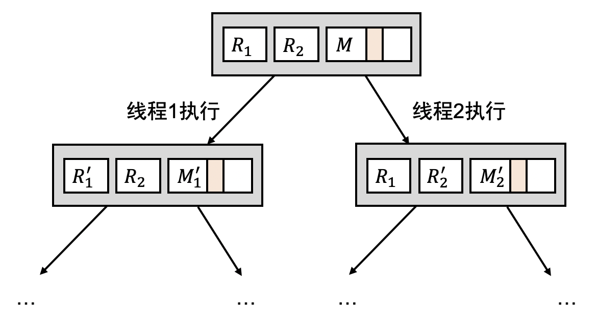
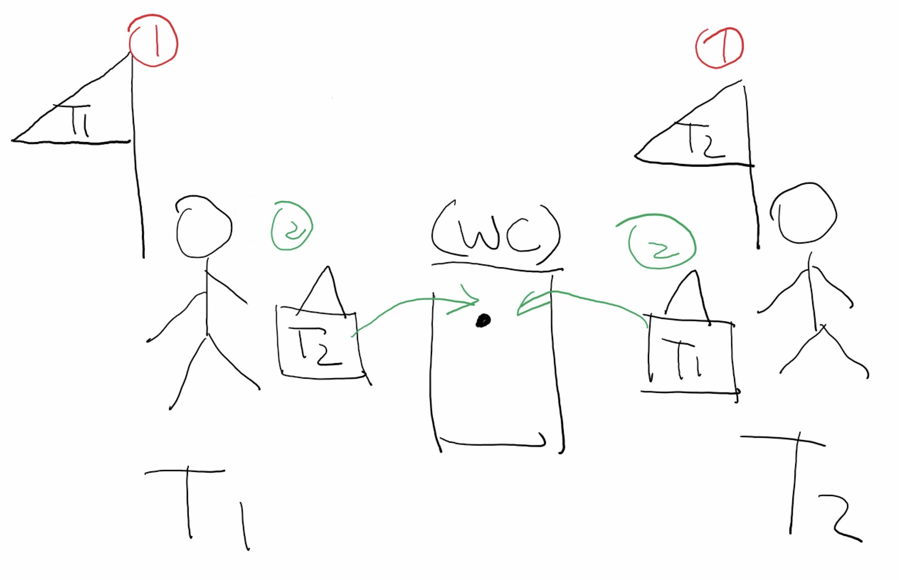

本讲概述
“多处理器编程：从入门到放弃” 之后，我们依然不能放弃并发编程 (这门课的主要内容)
- 要想编程，就要先能 “看懂” 已有的并发程序
- 如何理解一个并发程序的行为？
- 科学的进步很大程度依赖于工具的成熟 (微积分, PCR, ...)
- 我们用什么工具理解并发程序？
本讲内容
- 串行程序的状态机模型 (工具)
- 状态机模型的应用
- 并发程序的状态机模型
- 理解并发程序的执行
串行 (单线程) 程序的状态机模型
有限状态机 Finite State Machine (FSM)

有向图
- 节点 是 “状态”
- 边 是 “状态的转换”
- 边上有 label 代表执行某个动作
- 一个事件
- 一条指令
- 一条语句
- ……
程序 = 有限状态机
(操作系统上的) 程序执行时，状态是有限的
- 寄存器 (包括 PC 指针)
- 内存：代码、数据、堆栈 (暂时假设内存静态分配)
构造有限状态机：
- 每个不同的 configuration (内存/寄存器) 都是状态机的节点
- ，代表某个时刻程序内存/寄存器的快照
- 16 MiB 内存就有 种不同的状态
- 的下一个状态是执行 处的指令得到
- 取出 PC 指针处的指令、译码、执行、写回数据
- 被《计算机系统基础》PA 支配的恐惧
- 取出 PC 指针处的指令、译码、执行、写回数据
程序 = 有限状态机 (cont'd)
大部分状态 有唯一的后续状态 (deterministic)
执行一条指令，得到确定的结果
IF StackAddrSize = 64 THEN IF OperandSize = 64 THEN RSP ← RSP – 8; Memory[SS:RSP] ← SRC; (* push quadword *) ELSE IF OperandSize = 32 THEN ...can be tricky:
pushq %rsp
思考题：如果程序是 deterministic 的，那我们的程序无论运行多少次，不都只有唯一的结果了吗？
- 我们学习的大多数算法都是 deterministic 的
- 输入确定，无论运行多少次都是一样的结果
程序 = 有限状态机 (cont'd)
不确定 (non-deterministic) 的指令可能有多个后续状态
- (时间) rdtsc/rdtscp
- 获取处理器的 “时间戳” 用于精确定时
- (机器状态) rdrand
- 处理器自身提供的 “真” 随机数指令 (since Ivy Bridge, 2013)
- rdrand.c
- (系统调用) syscall
- 一般应用唯一不确定性的来源
- 例子：
read(fd, buf, size)- 返回值不确定 (-1, 0, 1, 2, ...)
buf中的数据不确定 (例如从键盘输入)
不确定性的来源：程序运行在操作系统/计算机硬件上，它们有自己的状态
x86-64 的例子
运行在 Ring 3 (低特权级) 的应用程序
- 通用寄存器 16 个
- rax, rbx, rcx, rdx, rsi, rdi, rbp, rsp
- r8, r9, r10, r11, r12, r13, r14, r15
- PC 指针/机器状态
- rip, rflags, cs, ds, es, fs, gs
- 内存
- 操作系统分配；通过 procfs 查看
这些状态都可以被 gdb 观察到
- info registers 会列出所有的寄存器
/proc/[pid]/maps有内存映射信息- 例子：另一个 minimal.S;
- (vvar, vdso, vsyscall 是系统映射的内存，我们假设不使用)
状态机模型：应用 (Exciting)
程序 = 状态机

Quite trivial
- 我们在《数字逻辑电路》上第一次学
- 在《计算机系统基础》又学了一遍
- 《操作系统》上怎么又要学一遍？
“程序 = 状态机 = 有向图” 是一种理解程序、分析程序的工具
- 计算机科学领域的基础工具之一
- 用图的思路理解程序/计算机系统！
哲 ♂ 学探讨
我们的物理世界是 deterministic 的状态机吗？
- 宏观物理世界近似于 deterministic 的状态机 (经典力学)
- 微观世界可能是 non-deterministic 的 (量子力学)

把物理世界建模成粒子的 local-interactions 的状态机
- Conway's game of life
- 可以在这个模型上严肃地定义很多概念：预测未来、时间旅行……
- What is spacetime, really?
- 例子：预测未来
- 类似于 syscall 指令
- “Oracle” Turing Machine
状态机模型：应用
在计算机硬件上的应用：高性能处理器实现
- 超标量 (superscalar) 处理器
- insight: 允许在状态机上 “跳跃”
在计算机系统上的应用：程序分析技术
- 静态分析：根据程序代码推导出状态机的性质
- 动态分析：检查运行时观测到状态机的执行
应用 (2): Record & Replay
在程序执行时记录信息，结束后重现程序的行为
- 确定的程序不需要任何记录
- 假设 执行 1,000,000 条确定的指令后得到
- 那么只要记录 和 1,000,000
- 就能通过 “再执行一次” 推导出
- 假设 执行 1,000,000 条确定的指令后得到
Record & Replay: 只需记录 non-deterministic 的指令的效果 (side-effect)
- (单线程) 应用程序
- syscall, rdrand, rdtsc, ...
- (单处理器) 操作系统
- mmio, in, out, rdrand, rdtsc, 中断, ...
- QEMU 内置了 record/replay!
G. Dunlap, et al. ReVirt: Enabling intrusion analysis through virtual-machine logging and replay. In Proc. of OSDI, 2002.
应用 (3): 全自动测试
int nread = read(fd, buf, size);
...
BUG_ON(nread == size); // 常见的错误，buffer overrun
BUG_ON(nread == -1); // 另一种常见错误
// 通常很难测试到这些情况(动态) 符号执行：把状态里的数值用符号 (变量) 代替，简化状态表示
- 例如
nread变量的值可以用 表示 - 每一个分支都可以用一个约束条件 表示
- 给定执行路径
- 满足 的 会执行另一条路径
C. Cadar, D. Dunbar, D. Engler. KLEE: Unassisted and automatic generation of high-coverage tests for complex systems programs. In Proc. of OSDI, 2008.
Research Opportunities are Open!
我们也利用 “状态机” 这个视角做非常 cool 的研究
- 程序的执行是
- 我们可以在程序执行的过程中做快照
- 继续执行 (原程序执行保持不变)
- 快照的 可以探索不同的执行路径 (shadow execution)
- 容错、更新、测试……
M. Yabandeh, et al. CrystalBall: Predicting and preventing inconsistencies in deployed distributed systems. In Proc. of NSDI, 2009.
并发程序的状态机模型
并发程序的状态机模型
复习题：线程共享什么、独享什么？
- 共享代码和数据
- 拥有独立的寄存器和堆栈
- 堆栈也位于同一个地址空间中
- 允许把局部变量的指针 (
&local_var) 传递给另一个线程- 实际用到的场景几乎没有

并发程序的状态机模型 (cont'd)
系统中有 个线程，则并发程序的状态
- 并发系统执行指令的顺序是不确定的
- 每个 都可以看成是一个串行程序
- 在任意状态，都可以选择任意一个线程执行一条指令
- 执行 处的指令得到

并发程序的状态机模型 (cont'd)
计算题：
- 个线程、每个线程执行 个
printf(假设一次printf是原子的)、理论上有多少种不同的输出？
#include <threads.h>
#include <stdio.h>
void thread_entry(int tid) {
for (int i = 1; i <= m; i++) {
printf("T%d's %d-th operation\n", tid, i);
}
}
int main() {
for (int i = 0; i < n; i++)
create(thread_entry);
}这就是为什么并发程序很难写！
并发程序的状态机实在是太大了……
- 就算是合并确定 (deterministic) 的状态，只要有共享内存，状态空间就很难画出了
- 还不考虑编译优化、多处理器之间的可见性 (memory model) 等问题
- 刚才介绍的各种状态机模型的应用，都需要为多线程重新设计
- 共享内存是 non-determinism 的重要来源
- time-travel debugging/record & replay 需要记录内存访问的顺序
- 自动测试要考虑如何探索线程调度
- ……
理解并发程序的执行
理解 (并发) 程序的执行
程序
- 指令序列的静态描述
- 高度概括、精简
- 行为有时难以理解
- 循环、递归、分支的组合
- 不确定的共享内存
状态机
- 所有动态行为的集合
- 静态时的分支、循环全部被展开了为顺序结构
- 大量的冗余和重复 (verbose)
- 行为明确，容易理解 ← 本课程中最重要的工具之一
例子：实现互斥
希望实现 lock/unlock，保证
- (顺序) 编译优化不能越过 lock/unlock
- (原子) lock 返回后 unlock 之前，其他线程 lock 不得返回
- (可见) unlock 之前执行的写操作，在 unlock 之后对其他线程可见
void do_sum() {
for (int i = 0; i < n; i++) {
lock(); // 保证顺序、原子性、可见性
// critical section; 临界区
sum++;
unlock();
}
}Peterson 算法：实现 2 人的互斥
- 想上厕所的人：(1) 首先举起有自己名字的旗子 (2) 挂上有对方名字的牌子；后挂的牌子会覆盖先前的 (3) 环顾四周，当对方没有举旗或牌子上是自己名字的时候，进入 WC (4) 出 WC 时放下旗子
- 只有旗子的时候/只有牌子的时候都是有问题的 (为什么？)

- 理解并发的另一个工具：把线程想象成人、把共享内存想象成物理世界
- 抢厕所时，牌子起了礼让的作用
Peterson 算法：代码
int turn = T1, x = 0, y = 0;
void thread1() {
[1] x = 1; turn = T2;
[2] while (y && turn == T2) ;
[3] // critical section
[4] x = 0;
}
void thread2() {
[1] y = 1; turn = T1;
[2] while (x && turn == T1) ;
[3] // critical section
[4] y = 0;
}假设：机器每次原子地 (atomically) 执行一行代码，内存访问立即可见
Peterson 算法：构造状态机
状态表示：
- 初始状态：
- 每一步可以不确定地选择一个线程执行一行代码
- 状态空间是有限的：
- 但如果算法正确，有些状态应该是不可达的
- 例如
- 状态空间是有限的：
Peterson 算法：正确性
Safety: 坏事永远不会发生
- 在任意执行中， 不会出现
- 图论的语言： 的节点在 上不可达
Liveness: 好事总会发生
- 在任意执行中，有限步之内 会出现
- 图论的语言：不存在 的一条 (无穷) 路径，每个线程都执行了无穷多步，且所有经过的节点
理解并发程序：prove by brute force 演示
- 我们的第一个 non-trivial 并发程序的理解和证明 (撒花)
- “model checking”
- R. Jhala and R. Majumdar. Software model checking. ACM Computing Surveys, 41(4), 2009.
Takeaways and Wrap-up
程序 = 状态机 = 有向图
- 这门课用到最 fundamental 的抽象和理论工具
- 理解 (reasoning about) 程序/操作系统的行为
- 证明程序的正确性/找到反例
- 构造程序分析
复习题
- 尝试一下 gdb 的 time-travel debugging 功能
- 假设 Peterson 算法的实现每一步执行一次 load/store (而不是一行)
- 用 brute force 方法证明它的正确性
- 假设 Peterson 算法执行时，处理器能交换不同变量的内存访问
- 用 brute force 方法证明它违背 safety
- (你会发现这是上次课讲过的例子)